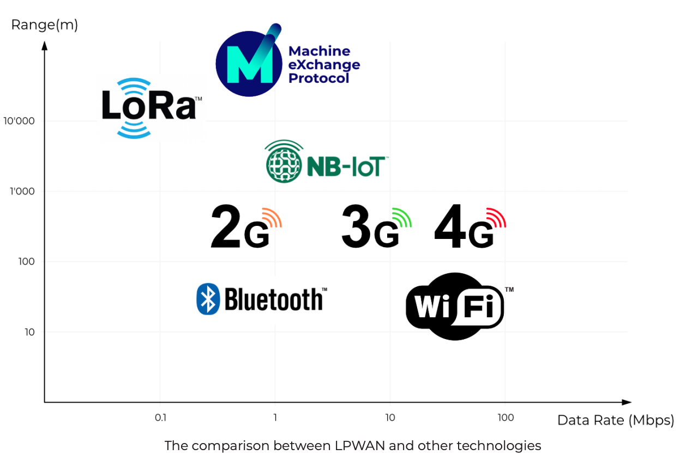
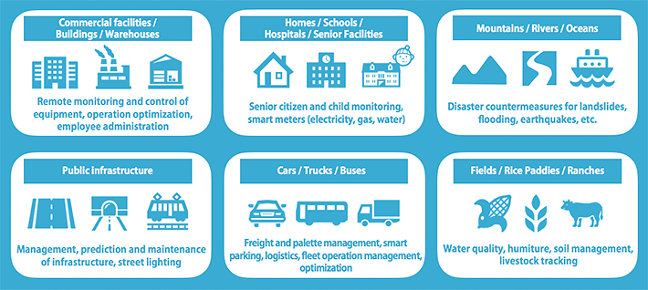

According to a report by IHS Markit, "The number of connected IoT [Internet of Things] devices worldwide will jump 12% on average annually, from nearly 27 billion in 2017 to 125 billion in 2030" and "Global data transmissions are expected to increase from 20-25% annually to 50% per year, on average, in the next 15 years."
LPWAN has become one of the fastest growing spaces in the Internet of Things (IoT) ecosystem since the term emerged on the scene in 2013 and is helping drive this technological shift.
And the reason LPWAN is considered a driver of this technological shift ... LPWAN is the perfect solution for devices that need to send data over long ranges (upwards of 20km) without the constraints of battery life, a shortfall of WiFi, Bluetooth and 3G & 4G networks.
Now, this is really where LPWAN technology is coming to the forefront in the new world of mass data technology transmissions. As the overall development of Smart Cities continues to thrive, the need for a data network which allows constant data streams, covering significant distances, whilst using significantly less energy than other data network platforms is now, more than ever, becoming a key pre-requisite to the future of Smart Cities and their success. This is where LPWAN is thriving and becoming the technology of choice, especially for the Smart Cities of the future.
What are the benefits of LPWAN?
LPWAN technology emerged to the forefront in recent years with the goal of finding a better data transmission solution than WiFi, Bluetooth and 3G & 4G networks. These earlier established networks were originally targeted at connecting people, not at connecting the data generated by "things." The amount of machine-generated data has multiplied significantly in recent times. The new LPWAN technology offers aspects where others simply can’t compete:
- 10 year sensor battery life
- 20 km data reach with just a single Gateway
- Offers an extreme amount of connection points (over 60,000 for a single network cell) supported by LPWAN Gateways at an extremely low cost

Because LPWAN uses less power, energy costs will also be less for consumers. The advantage for users is you can create your own decentralized network wherever and whenever you like. The technology provides a cost-effective solution to transferring data over Wi-Fi, Bluetooth and 3G, 4G or 5G networks.
This cost effectiveness is certainly a powerful factor, leading many to choose LPWAN over other data network technologies. Imagine sending thousands of data uplinks over 40 sq/km using no more than 5 Watts per day. That’s the energy saving that LPWAN provides, and the power is significantly less than the cost of a household lightbulb (at around 40+ Watts).
LPWAN is thriving across a wide variety of industries. For example, factories are choosing LPWAN due to the fact it doesn’t disrupt network connectivity like Wi-Fi does. An LPWAN network allows industries such as the automobile and aero industries to integrate LPWAN technology seamlessly without having to worry about the network interfering with sensitive tools. Smart City industries are also opting for LPWAN due to its long reach, low power and low-cost effectiveness. All in all, LPWAN is proving to be a big win for individuals and industries across a wide spectrum.
What are some LPWAN Technology Examples?

(chart source: SoftBank to Roll Out ‘LoRaWAN™’ Low Power Wide Area Network)
The aeronautical builder, Airbus, has been looking into LPWAN to use within their manufacturing plants, in order to avoid data network collision within their sensitive tools. MXC, an LPWAN Blockchain leader was recently in talks with Airbus in order to facilitate their complete manufacturing facility with the LPWAN data network.
Smart Cities such as Shanghai, China, have chosen LPWAN in order to connect 100’s of thousands of Smart City sensors, measuring everything from Air Quality, Human Movement and Rising Water Levels. All of which are now being performed, using LPWAN in a much more efficient data tracking manner than before
Smart Farming is a hot topic. LPWAN’s low cost and low emissions ensure a healthy and cost-effective farm can be run optimally using this data network. For example, many farms in Germany have been using LPWAN in conjunction with MatchX (A large German LPWAN Hardware manufacturer) to track their cows throughout the country side. The cows wear sensors and the LPWAN Gateways track the cows seamlessly throughout their travels
These industries are just the tip of the iceberg for LPWAN and the effect they are already having on industries from Aeroplanes, Cities and cows alike. This is also pushing the development of LPWAN into new areas, including Blockchain. The future of LPWAN is bright and the strong use cases are ensuring a continued development in this exciting data technology.
What are the latest LPWAN Devices?
The development of LPWAN over the last 5 years has been nothing more than astounding. The demand for LPWAN is moving fast and the development is bustling along to keep up. Some significant mentions:
The MatchX LPWAN Gateway is a feature rich LoRaWAN gateway with models certified around the globe. With Listen-Before-Talk technology (available in Europe, Japan and South Korea), MatchX Gateways are built to avoid data-collision, ensuring the reliable transmission of your data.
The maintenance-free and multi-functional duct air quality sensor measures CO2, mixed gas (VOC), temperature and humidity (relative, absolute, enthalpy, dew point).
The Hibou Indoor Air Quality Monitor is a smart environmental sensor system that can be installed in your home, home garden or office environment. The air quality monitor can monitor and collect the real time data of CO2 concentration, indoor air quality (VOC detector), Humidity, Temperature, Atmospheric pressure & Ambient. The Hibou Indoor Air Quality Monitor collects the real-time data via its sensors and sends to Hibou Cloud Sensor Analytics platform via LPWAN network (LoRa).
The M2 Pro is the first Blockchain enabled LPWAN Gateway. It is also the first time that a company has monetized LPWAN as a technology, allowing anyone who sets up an LPWAN data network to profit from it. This fascinating technology is a key driver in LPWAN adaptation around the globe.
New LPWAN products are always arriving in the market. These products are the drivers for continued adoption and interaction with LPWAN technology. As a result of these products, we believe that, in future, there will be less people asking “What is LPWAN?” And more asking, “What is the latest in LPWAN technology?” LPWAN is an exciting development in data transfers and the future is certainly looking very bright.